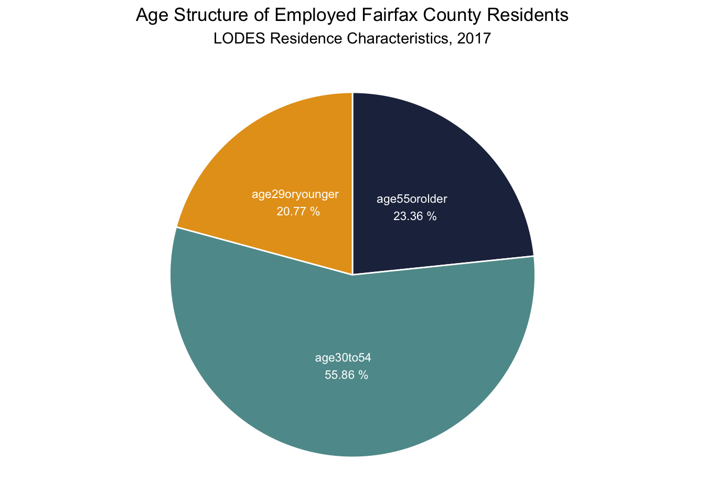
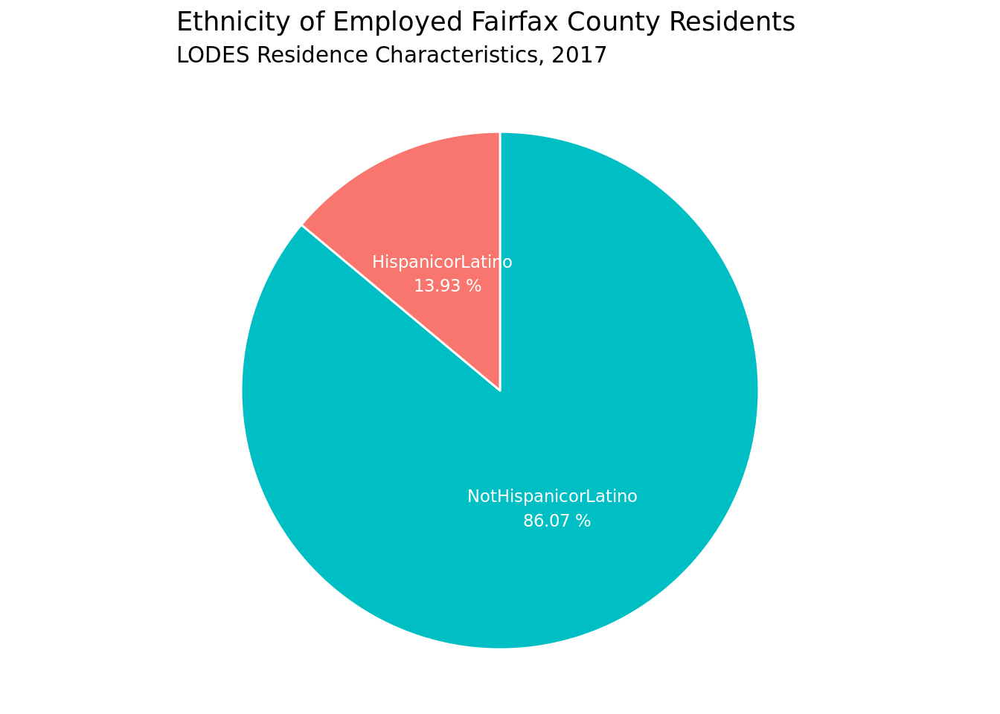
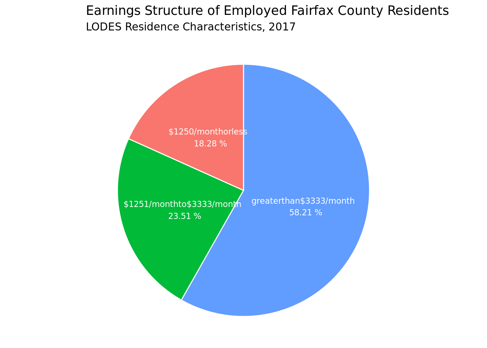
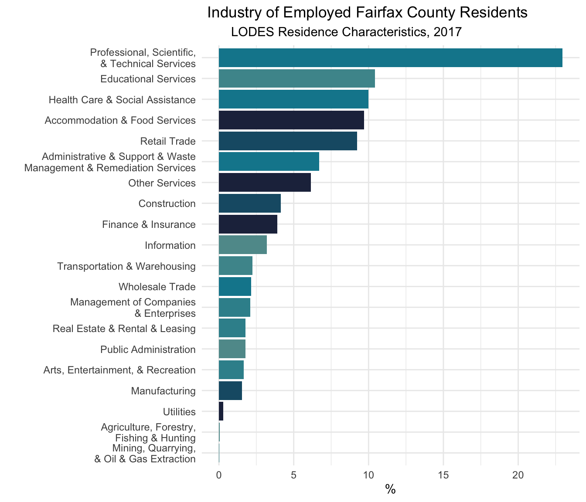

Fairfax County Residents' Employment Characteristics
The page provides a demographic overview of Fairfax County residents.
eda geospatial interactive map socio-demographics sectorsApproach
This documents provides baseline census tract-level visualizations for characteristics of Fairfax County residents who are in the labor force. Along with sociodemographic characteristics like workers’ age, ethnicity, level of education, and median income, we also consider how long workers residing in different parts of the county have to travel to get to their work site, what industries they work in, and what their occupations are. Better understanding the characteristics of Fairfax County residents in the labor force is the first step to later identifying groups at risk of pandemic-related income and job loss.
We used the Residence Area Characteristic data (RAC) from the Origin-Destination Employment Statistics (LODES) dataset generated by the US Census Bureau as a part of their Longitudinal Employer-Household Dynamics (LEHD) program. For our purpose, we used the data from 2017, which is the latest LODES data available. The data files for LODES are state-based and include Origin-Destination, Residence Area Characteristics, and Workplace Area Characteristics files. This dataset provides census block group-level geographic resolution and can be aggregated to higher units of analysis. We used the dataset to retrieve information on age, education, race, ethnicity, monthly income, and industry sector of employed Fairfax County residents.
We also used the latest available American Community Survey (ACS) 5-year estimates, spanning 2014 to 2018. ACS is a nationally representative household conducted by the US Census Bureau. It provides data on population social, economic, and housing characteristics, and has census block group level geographic resoluton. We used ACS to extract tract-level data on employed Fairfax County residents’ means of commute to work, class of work, and major industries.
Fairfax County Residents in the Labor Force
Sociodemographic Characteristics
This following chart displays the age distribution of county residents in the labor force. It indicates that 23% of county residents are at or nearing retirement age. Another 56% of the work force is aged 30 to 54 years, while 21% of the workers are 29 years old or younger, likely beginning their work careers.

The county’s employed residents are predominantly white, followed by Asian and Black African American workers.

Only a minority, or 14% of the county’s worker population, are Hispanic or Latino.

County residents in the workforce are highly educated. Approximately 43% of the employed population has at least a Bachelor’s degree, indicating a highly skilled workforce. More than 25% have at least an associate’s degree. Another 19% graduated from high school or equivalent, but do not have a college degrees, and only 13% of the residents have less than a high school degree.

Employment Characteristics
Over 58% of the county’s employed residents earn a salary over $3,333 per month. Another 24% earn a salary between $1,251 and $3,333 per month. The remaining 18% earn an income below $1,250 per month.

We examined residents’ employment by industry sector and found that the majority of employed Fairfax County residents hold jobs in profesional, scientific and technical services. The next top four industries employing Fairfax County residents are education services, health care, accomodation and food services, and retail trade.

Exploring Work Commutes, Class of Work, and Industries
To visualize residents’ employment characteristics at census tract level, we produced interactive maps using ACS data. We visualize means of commute to work, class of work, and work industries by residence tract. Clicking on the tabs and selecting a variable populates the map, and hovering over the map displays the percentage of residents living in a given tract with the selected characteristic.
You can explore the means of commute to work for employed Fairfax County residents by their residence census tract using the app below. For example, the app shows that residents in the cities like Springfield and Mount Vernon depend more on public transit than residents in other parts of the county. Residents in Springfield and Dranesville commute 30 minutes or more to get to their workplaces. The class of work maps also show that Springfield and Dranesville have comparatively lower percentages of residents employed in private jobs and a high proportion of residents holding government jobs. Finally, the industry maps show that many residents around Providence have jobs in professional, scientific, and management sectors, while many residents in Springfield, Mount Vernon, and Dranesville hold jobs in healthcare, social assistance, and educational services. Sully and Mount Vernon have large percentages of residents employed in arts, entertainment, and recreation service sectors.